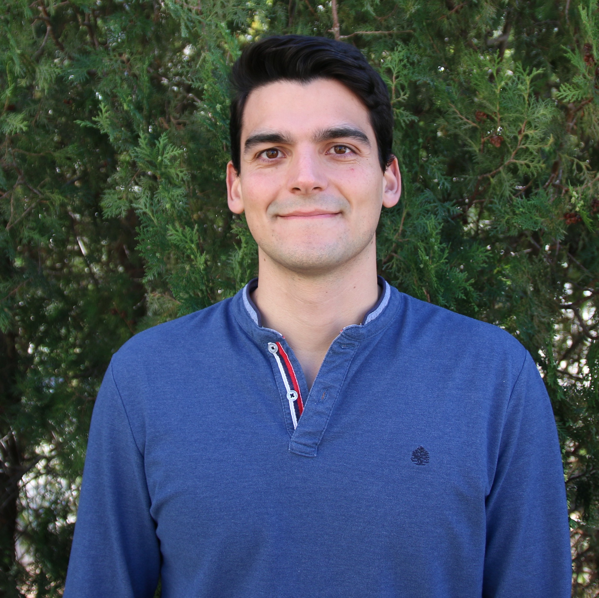
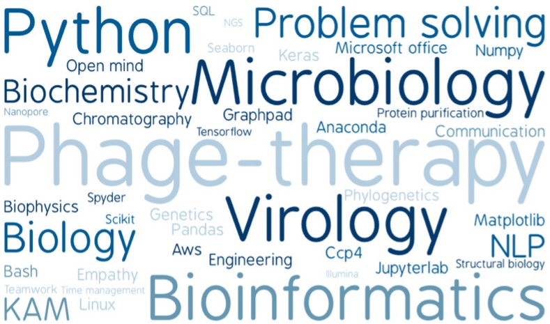
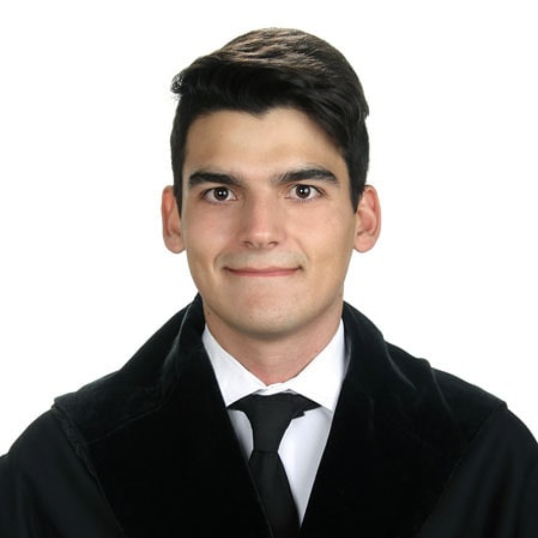
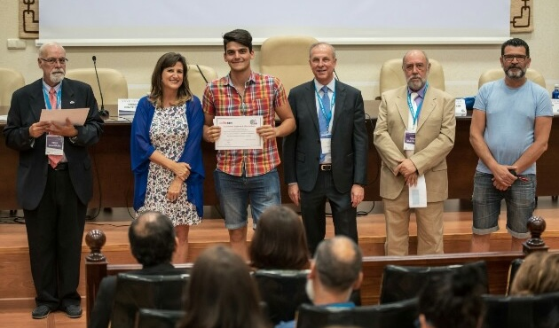
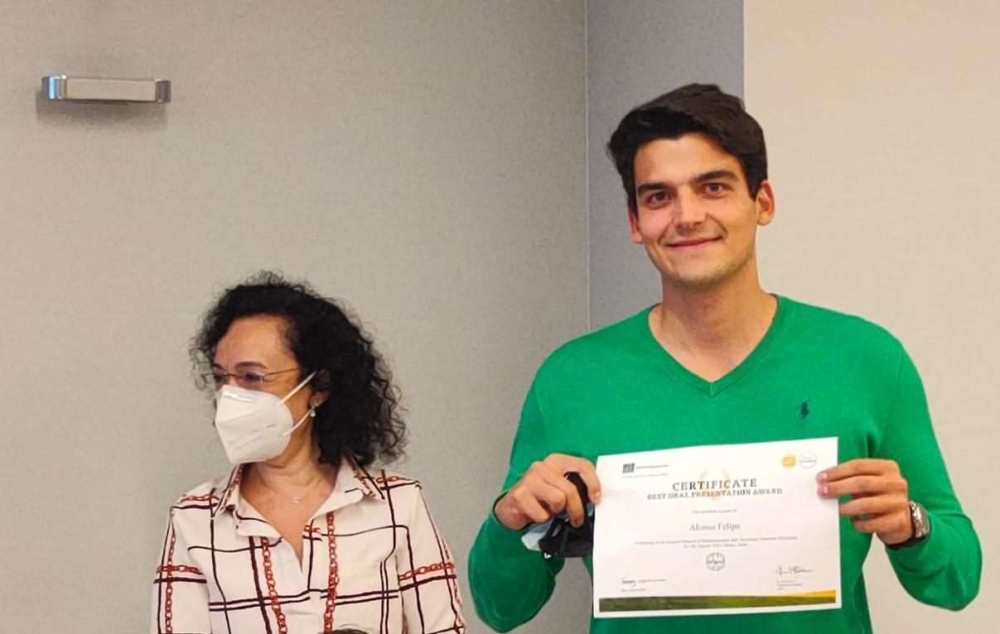
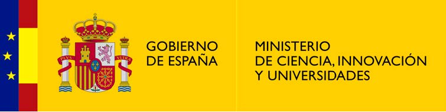
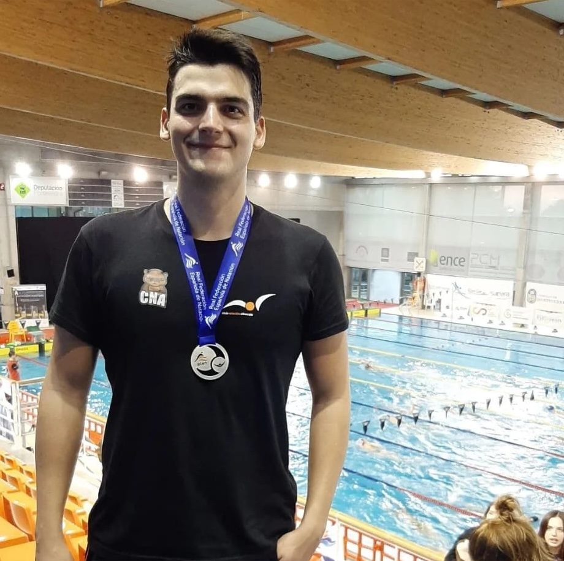
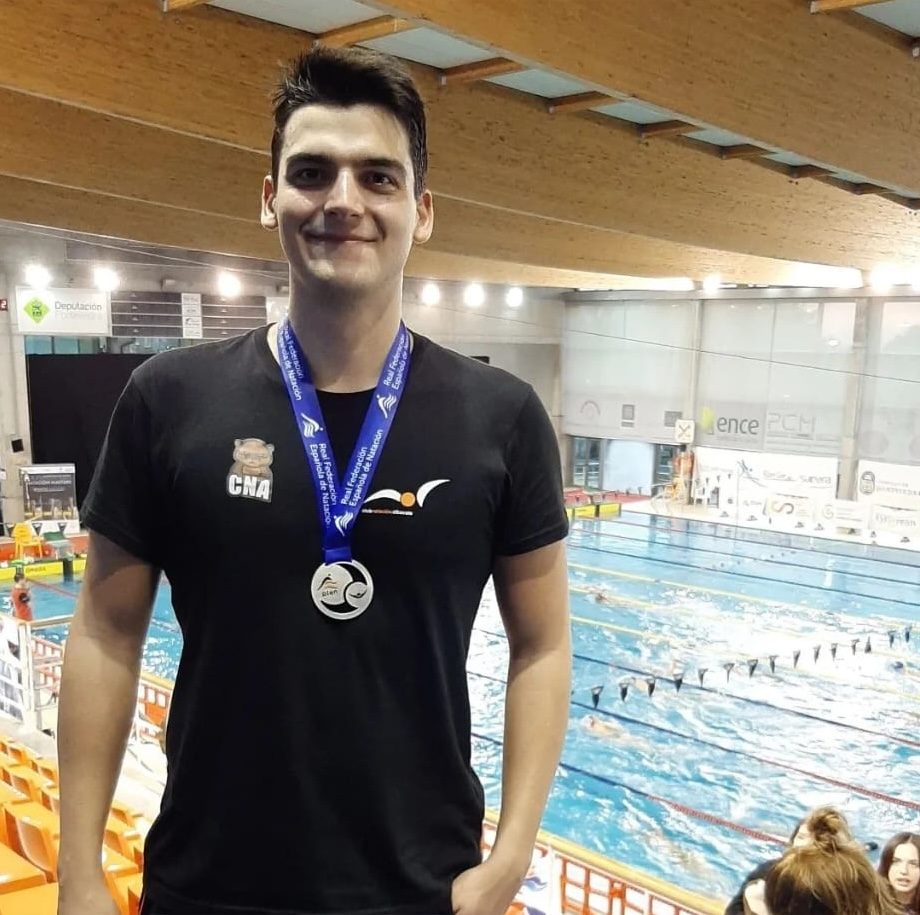

Alonso Felipe Ruiz
CTO at Evolving Therapeutics

About Me
I am a dedicated researcher with a passion for molecular biology, bioinformatics, and AI. Born in Albacete, my journey has taken me from the labs in Valencia to renowned research institutions such as Pasteur Institute and Imperial College, shaping my experience and vision. As the CTO of Evolving Therapeutics, I leverage cutting-edge technology to revolutionize phage therapy. Beyond science, my love for Greek mythology, physics, and travel fuels my quest to understand the world. My commitment to volunteering highlights my dedication to social causes, aiming to be a better person and help make the world a better place.
Skills

My Professional Career
"We are what we repeatedly do. Excellence, then, is not an act but a habit." Aristotle.
University
My journey began in Valencia with a degree in Biochemistry and Biomedical Sciences at the University of Valencia, where I discovered my first passion (molecular biology). This eagerness to understand the foundations of life led me to pursue a Master’s in Molecular Approaches in Health Sciences, always with the idea of continuing toward a Ph.D. and a career in science.

Doctoral Thesis
I completed my doctoral thesis in the prestigious group of Alberto Marina at the Institute of Biomedicine of Valencia. From October 2019 to January 2024, working as a predoctoral researcher, I gained deep knowledge of "Quorum Sensing" systems from both functional and structural perspectives, covering structural biology, bioinformatics, and fundamental aspects of microbiology.
During my time at the Institute of Biomedicine, I also discovered my other great passion when I learned programming in Python for bioinformatics applications, which allowed me to analyze complex biological data effectively, but more importantly, taught me a new methodology and approach to doing science.
{kind=link}
{kind=link}
{kind=link}
Pasteur Institute
In September 2020, during my doctorate, I joined the Microbial Evolutionary Genomics Unit at the Pasteur Institute for a two-month stay, specializing in comparative genomics and microbiology. Here, I honed my skills in generating Hidden Markov Models (HMM), utilized my knowledge of Python, and solidified my understanding of microbial evolution and phylogenetics. This experience motivated me to pursue a second Master’s in Data Science and Cloud Computing Engineering at UCLM, convinced that this was my new passion (data science), specializing in Artificial Intelligence and completing my final project on predictive models for phosphorylation markers in breast cancer, all while finishing my Ph.D. studies.
{kind=link}
{kind=link}
{kind=link}
Imperial College
A second doctoral stay at Imperial College, from July to September 2022, immersed me in the world of genetic engineering and virology. My experience in bacterial modification and molecular biology techniques expanded my understanding of the microbial world. I also developed techniques for working with bacteriophages, learning how to harness these tools of nature.
Evolving Therapeutics
Since February 2024, I have been working as CTO at Evolving Therapeutics. In this role, I apply everything I have learned about microbiology, molecular biology, bioinformatics, AI, and ML to enhance our phage-based solutions. My goal is simple: to make a real difference in the lives of those who need it most.
Academic Record
Awards and Scholarships
Best Communication at the XXVII Congress of the Spanish Society of Microbiology (SEM)
For the communication "OmpR, from osmoregulation to pharmacoresistance".

Best Communication at the VI FAGOMA Group Meeting
For the communication "How do Firmicutes talk?".

FPU Doctoral Scholarship
Ministry of Science, Innovation, and Universities.

AI Projects
Swimming
Another major pillar in my life has been sports, specifically swimming. Competitive sports have allowed me to develop many of the skills I apply in my daily life, such as commitment to effort, concentration, and perseverance. The discipline required to train consistently and face challenges in the pool directly translates to my professional life, where dedication and the ability to stay focused on long-term goals are essential. Additionally, the ability to manage pressure and adapt to changing situations, which is crucial in competitions, strengthens my ability to tackle challenges in the workplace and seek innovative solutions. Swimming has not only taught me to be a better athlete but also to be more efficient and resilient in my professional career.
Among my greatest achievements in the water are the silver and bronze medals in freestyle and medley relays (categories +100 and +80) at the XXIX Spanish "OPEN" Winter Masters Swimming Championships.
 
